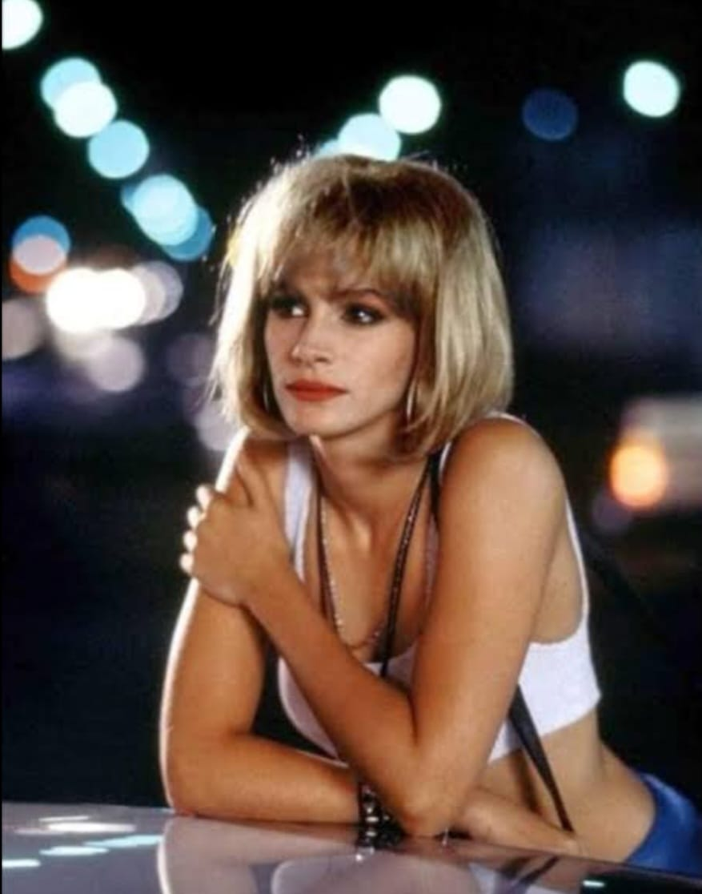
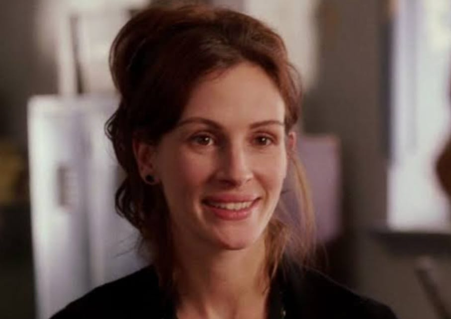
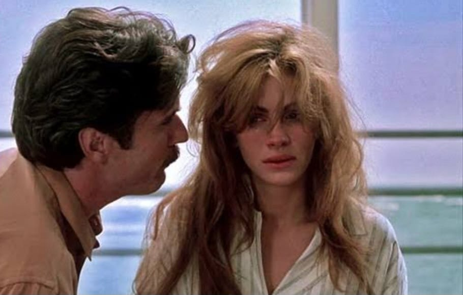
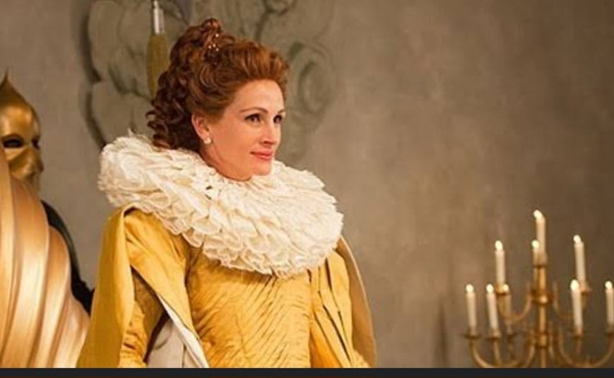
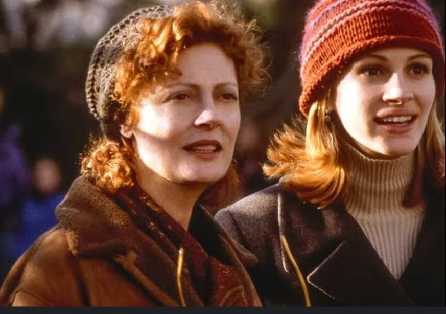

Julia Fiona Roberts é uma atriz e produtora norte-americana. Nasceu em Smyrna, Georgia, em 28 de outubro de 1967. Ela é uma das atrizes mais bem pagas e reconhecidas de Hollywood.

A trama do romance segue com um empresário magnata que contrata uma prostituta apenas para acompanhá-lo em eventos sociais por uma semana, nesse período se torna em uma elegante jovem, até que se apaixona por ela. Com direção de Garry Marshall, a produção americana foi um grande sucesso de bilheteria. Comduas horas de duração,o longa-metragem tem roteiro assinado por J.F. lawton e distribuição pela Buena Vista Picture.
Data de lançamento: 27 de julho de 1999 (Brasil)
Diretor: Garry Marshall
Indicações: Oscar de Melhor Atriz- comédia- musical.
Autor: Pretty Woman
Roteiro: J.F. Lawton
Adaptação de: Uma Linda Mulher

Katherie Watson é uma recém-formada da UCLA que foi contratada, em 1953, para lecionar História da Arte na prestigiosa Wellesley College, uma escola só para mulheres. Determinada a confrontar valores ultrapassados da sociedade e da instituição,Katherine inspira suas alunas tradicionais, incluindo Betty e Joan, a mudarem a vida das pessoas como futuras líderes que serão.
Data de lançamento: 19 de dezembro de 2003 (Brasil)
Diretor: Mike Newell
Indicações: Indicação Globo de Ouro Melhor Canção Original.
Elenco: Julia Roberts, Kirster Dunst, Julias Stiles, Maggie Gyllenhaal, Dominic West, Juliet Stevenson,Marcia Gay Harden.

Em um casamento que já durava quatro anos Sara(Julia Roberts) e Martin(Patric Bergin) personalizam o par perfeito, feliz e próspero, mas a realidade o marido espanca regularmente sua esposa. Assim, para escapar dessa tortura diária ela simula sua prória morte e foge para uma outra cidade, a fim de recomeçar sua vida com uma nova identidade. Após algum tempo ela se apaixona, mais seu marido descobriu indícios de que ela pode estar viva e decide encontrá-la de qualquer maneira.
Data de lançamento: 08 de fevereiro de 1991 (Brasil)
Diretor:Joseph Ruben
Elenco:Julia Roberts, Patrick Bergin, Kevin Anderson.
Roteiro:Ronaldo Bass

Após a morte do rei (Sean Bean), sua esposa (Julia Roberts) assume o comando do reino. Extremamente vaidosa, ela passa a cobrar cada vez mais impostos para sustentar uma vida de opulência. Ao mesmo tempo mantém presa em seu quarto a enteada, Branca de Neve (Lily Collins). Ao completar 18 anos, Brnca de Neve resolve sair do castelo e conhecer a realidade do reino. Horrorizada coma stuação de fome e de miséria do povo, ela retorna decidida a derrubar a rainha.
Data de lançamento: 06 de abril de 2012 (Brasil)
Diretor: Tarsem Singh
Indicações: Oscar de Melhor figurino.
Gênero: Comédia, fantasia
Adaptação de: Espelho, espelho meu

Uma jovem de doze anos(Jena Malone) e um garoto de sete(Lian Aiken), filhos de pais separados, não aceitam a nova namorada de seu pai (Ed Harris), uma bela e renomada fotógrafa (Julia Roberts). O garoto ainda tolera a situação, mas a adolecente não se conforma com a separação e com o fato de seu pai e a namorada viverem juntos, pois isso significa que as chances de reconciliação de seus pais se tornem quase nulas. Por sua vez, a mãe das crianças (Suzan sarandon) ainda alimenta esta briga, fazendo o gênero mãe perfeita. A fotógrafa faz de tudo para agradar as crianças,chegando ao ponto de dar tanta atenção aos enteados que acaba perdendo o emprego, pois deixou de ser a profissional competente que era. Até que uma notícia inesperada muda completamente a relação entre os familiares.
Data de lançamento:29 de janeiro de 1999(Brasil)
Diretor: Chris Columbus
Indicações: Prêmio Globo de Ouro, melhor Atriz
Roteiro: Gigi Levangie, Jessie Nelson